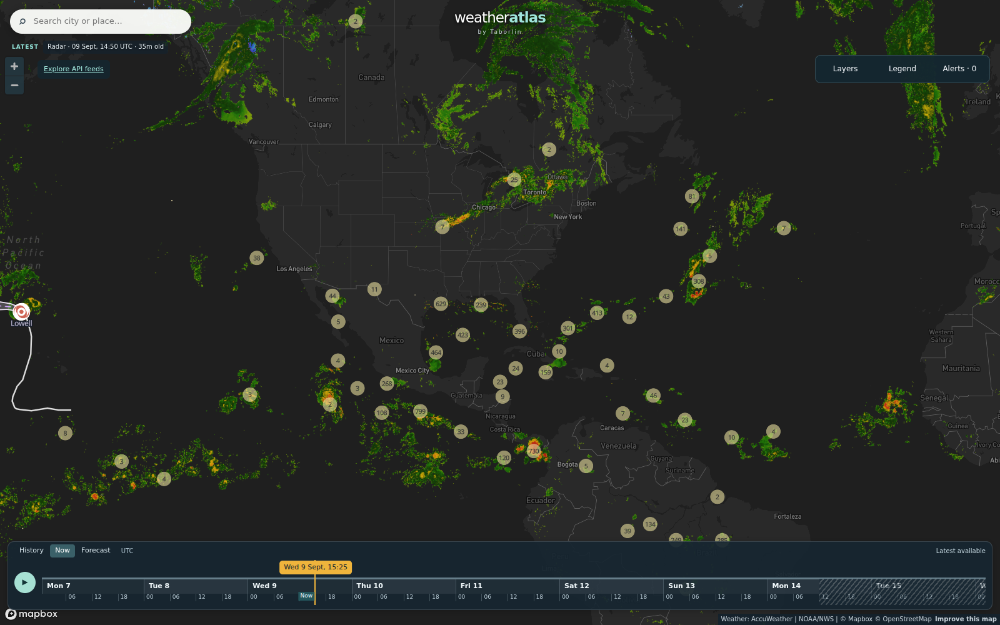

Daily severe-weather intelligence for LNG, refining, and terminal operators on the U.S. Gulf Coast.

Radar + hurricane-tracker view, 14:50 UTC Sep 9 (frame 35 min old at capture). Live interactive version: accuweather.taborlin.co — dual-source alerts, lightning, satellite, past→forecast timeline.
| System | Status | Energy-asset impact |
|---|---|---|
| Gulf of Mexico / Atlantic | QUIET | None — no tropical formation expected next 7 days (NHC) |
| TS Lowell (Central Pacific) | MOVING AWAY | None — tracking NNW north of Hawaii, away from shipping and infrastructure |
| Invest EP96 (E Pacific) | MONITOR | 80% / 48h development odds, but projected track stays WNW — away from the Baja LNG coast (Costa Azul) |
Same hour, same coordinates (Port Arthur / Sabine Pass LNG corridor), two very different answers:
Thunderstorm window crossing the Sabine corridor this afternoon; lightning exposure at dock and construction coordinates.
Full asset brief →75% t-storm window 4–6 PM CDT while free APIs show single digits. Crane-safe hours, lightning stand-down timing, and Sep 1 Edouard surge context.
Full asset brief →